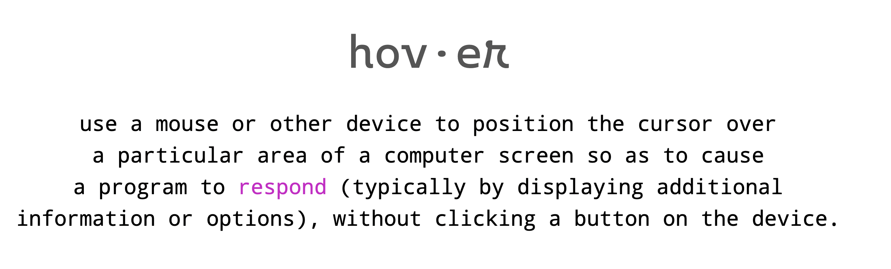

Are.na and Research
After going on Are.na , I found a website that archives websites that mainly use the hover element. Some aspects I noticed from the websites were that they gave little to no direction or context on how to explore them. This gave me idea to make users visiting my website to explore/hover with no context. Some elements I noticed were that when interacting with one element, others abstract elements would be affected too like from Sam's website. Another visual idea inspired by the archive was that I could take abstract imagery and make objects appear connected to them. I additionally researched how hover is utilized from contemporary websites and how useful it is. Aspects like improving user interaction, enlarging imagery, adding/fading colour, and bringing information came up from the exploration.
Figma and Sketches
I initially came up with this idea to display my trip to Japan over the Summer using hover elements but decided to not use it. There were abstract elements but after getting critiqued, the idea focused using the hover function rather than the function itself. After commuting with my friend, she was playing a mystery puzzle game and it dawned on me how she used small clues to finish the level just by exploring and gather visual information. That little notion inspired me to create a website where hover pushes the user into moving on from visual feedback. Aspects like hovering over elements in order to move on to another "level" (change in colour, animation, or size) is what I wanted in my own code.
Coding Production
I first reviewed some javascript exercises to refresh my understanding. Afterwards, I made another folder to test out and experiment with my code. If the iteration worked well, I would paste it in my main folder for submission. I would say it took a long time trying to format my squares since I initially used VW and VH for positioning so when I resized my screen smaller, the squares merged together. After asking some peers for help and going on W3schools, the problem was solved.
I also referenced how I would personally use hover and one aspect I wanted to include was how I read text on a website. This lead to the creation of my second page which contained words instead of shapes. The only way you would move on is if you hovered over the word "respond." I made it clear that the title would change font and colour to make a small clue that it might apply with the paragraph text as well. I also used the colour purple for both hover changes for another visual hint.
After getting feedback, I decided to make my last level a little harder. It was too straightforward in that the user could just hover over circles and move on to the next. I decided to make more circle copies so that users would have to actively search/hover for the correct circle in order to move on. I copied and pasted the CSS, changed their positioning and added them to my Javascript to make this possible.